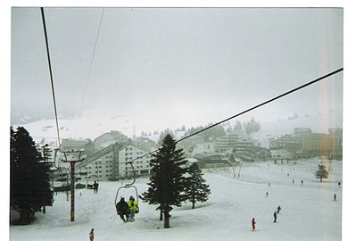

Uludağ, Bursa ili sınırları içinde, 2.543 m yüksekliği ile Türkiye'nin en büyük kış ve doğa sporları merkezi olan dağ. Uludağ; Marmara Bölgesinin en yüksek dağıdır. Kuzeybatı-güneydoğu doğrultusunda uzanan Uludağ'ın uzunluğu 40 km'yi bulur. Genişliği ise 15–24 km'dir. Toplu ve heybetli bir görünüşe sahip olan bu dağın Bursa'ya bakan yamaçları kademeli, güneye Orhaneli'ne bakan tarafları ise düz ve daha diktir. En yüksek noktası göller bölgesinde yer alan Uludağ tepe'dir (2.543 m). Uzaktan Bursa'ya yaklaşılırken ve oteller bölgesinde görülen yüksek tepe genelde zirve olarak algılanır. Hâlbuki Zirve gibi görünen o tepenin ismi Keşiş Tepedir ve yüksekliği 2.486 m'dir. Uludağ tepe (2.543 m) Keşiş Tepenin 5 km güneydoğusunda yer alır. Dağın kuzey tarafında Sarıalan, Kirazlı, Kadı, Sobra yaylaları vardır. Tarihi 1933'te Uludağ’a bir otel, bir de muntazam şose yol yapılmış, böylece bu tarihten itibaren Uludağ kış kayak sporları için bir merkez haline gelmiştir. Düzenli otobüs seferlerinin başlaması da buraya ilgiyi daha da artırmıştır. Sonradan asfaltla kaplanan bu yol Uludağ'ın Kadıyayla hariç bütün yerleşim birimlerini doğrudan Bursa'ya bağlar. Uludağ modern dağ tesisleri, 1963'te hizmete açılan Türkiye'nin ilk teleferiği Bursa Teleferik, dördüncü büyük kent olan Bursa'nın hemen yanında olması ile dağ ve kış turizminin merkezi olmuştur. Uludağ Türkiye'nin en büyük kayak merkezidir. Yol durumunun uygunluğu,uzun kış mevsiminde (Ekim-Nisan arası) kar bulunması, eşsiz manzaraları buraya turist çekmektedir. Dağın doruk noktasından açık havada İstanbul, Marmara denizi ve civar yakın yerlerin görünmesi buraya ayrı bir özellik vermektedir. Doğu, kuzey eteklerinin Bursa Ovasına yakın yerlerinde sıcak su kaynaklarının bulunmasından burada kaplıcalar meydana gelmiştir. Bursa'nın Çekirge semtindeki bu kaplıcalar pek çok hastalığa şifa olmaktadır. Teleferik 2014 yılında tümüyle yenilenmiş ve Kurbağakaya (Oteller) bölgesine kadar uzatılmıştır. Ayrıca teleferiğin ara istasyonu olan Sarıalan'da ve Sarıalan'dan telesiyejle ulaşılan Çobankaya'da Kızılay Derneği'nin her yaz düzenlediği yaz kampları bulunmaktadır. Kirazlıyayla'da kurulu bulunan eski senatoryum binası şu anda otel olarak kullanılmaktadır. Uludağ'da 15 adet özel ve kamuya ait 12 resmi konaklama tesisi vardır. Bunlara ait pek çok telesiyej ve teleski hattı mevcuttur.
